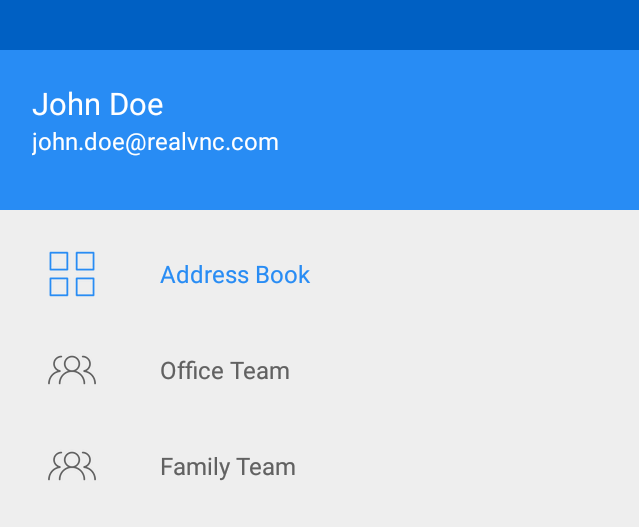

为您的团队添加计算机
VNC Viewer 可自动发现并无缝连接到团队中的计算机，无需重新配置防火墙或路由器。
您必须在要添加到团队的任何计算机上安装 VNC Connect。安装后，使用您用于登录 VNC Viewer 的相同 RealVNC 帐户应用订阅。付费和免费订阅都可用。
如果您是多个团队的成员，您可以通过侧栏菜单在它们之间切换。

注意：要了解如何加入多个团队，请访问 realvnc.com/docs/faq/teams.html。